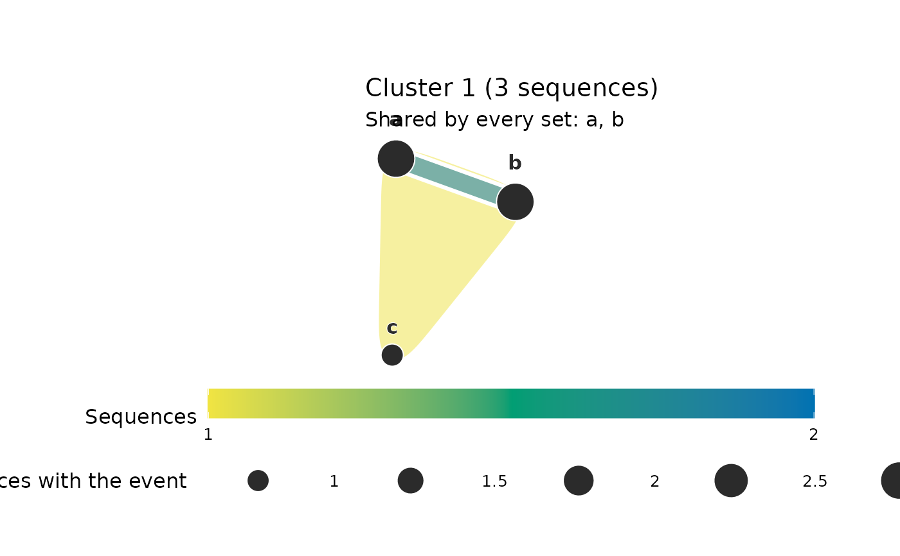

Hypergraph from co-occurrence data or an edge list
Source:R/hypergraph_groups.R
group_hypergraph.RdConstructs a net_hg the way a network is
defined from data. Co-presence data name an actor and a group:
every actor sharing one value of group (a session, a team, a citation
block) belongs to one hyperedge. An edge
list names from and to, and every row is a hyperedge of size two.
An optional weight column produces a weighted incidence matrix.
Usage
group_hypergraph(
data,
actor = NULL,
group = NULL,
weight = NULL,
nodes = NULL,
sparse = FALSE,
separator = NULL,
from = NULL,
to = NULL,
member = NULL,
cooccur_by = NULL,
top = 8L,
states = NULL
)Arguments
- data
Data frame in long format, one row per actor-in-group or per edge; or a clustering of sequences – a mixture Markov fit (
net_mmm), a distance clustering (net_clustering), or the per-cluster networks built from either (netobject_group). See "Clustered sequences" below.- actor
Character. Name of the column whose values become the hypergraph's nodes (members, participants, actors).
- group
Character. Name of the column whose shared values bind actors into one hyperedge (groups, sessions, teams) – Dynet's co-presence vocabulary. When neither pair of columns is named,
fromandtoare detected case-insensitively from the alias tabletemporal_hypergraph()uses (source/target,sender/receiver, ...), and failing thatactorandgroup.- weight
Character or
NULL. If supplied, the column is summed per(actor, hyperedge)pair to produce a weighted incidence matrix. DefaultNULLproduces a 0/1 binary incidence matrix.- nodes
Optional vector giving the complete node universe. This keeps nodes with no observed group memberships as zero-incidence rows, which is needed for representations such as citation hypergraphs where every decision is a node but some decisions are never cited.
- sparse
Logical. Store incidence as a sparse
Matrix? Use this for large, sparse event data such as the full GFCC citation-block corpus.- separator
Split the
actorcolumn on this string, one row per member, before building. Bibliographic exports ship a hyperedge's members as a single delimited cell – EUR-Lexcitationcelexandeurovoc, Scopus and Web of Science reference and keyword fields – soseparator = ";"replaces the caller's own split, trim and drop-empties. Members empty after trimming are dropped, and a row left with no member contributes no hyperedge.- from, to
Column names of a pairwise edge list, as an alternative to
actorandcooccur_by.- member, cooccur_by
Deprecated names of
actorandgroup; using them warns with ahypernets_deprecatedcondition.- top
Clustered sequences only: the number of most frequent state sets of each group kept as hyperedges (default
8).- states
Clustered sequences only: the states to keep, such as the events of interest. Every other state is removed from each sequence's set before counting, and a sequence left with no state is not counted.
NULL(default) keeps every state.
Value
A net_hg object with the same structure produced by
network_hypergraph() (hyperedges, incidence, nodes, n_nodes,
n_hyperedges, size_distribution, params), plus edge_data when
data carries hyperedge attributes (see Details). The params list
records source = "group_hypergraph" and the original column names.
For clustered sequences the object also has group_sizes and
state_counts (read them with hg_get()) and params records
source = "clustered_sequences", top, states and
unit = "sequences".
Details
The bipartite representation preserves the full group structure without projecting to a pairwise network. A group of three members A, B, C produces a single 3-hyperedge containing all three, not three pairwise edges AB, AC, BC. This avoids information loss when group interactions are the primary unit of analysis (Perc et al. 2013).
Unlike network_hypergraph() (which derives hyperedges from a network's
clique structure), group_hypergraph() takes group memberships
directly. The two functions are complementary:
group_hypergraph()- when group membership is observed (sessions, transactions, co-authorships).network_hypergraph()- when only pairwise interactions are observed and triadic structure must be inferred from triangles.
Rows with NA in the actor, hyperedge or weight column are dropped
silently.
Note
Dense and sparse paths are tested for exact equality. The sparse path is additionally exercised by the full GFCC reproduction from the Legal Hypergraphs Zenodo archive (3,618 nodes, 46,165 hyperedges and 77,187 nonzero incidences).
A dense incidence with more than .Machine$integer.max cells cannot be
addressed by the flat cell index, and would exhaust memory well before
that. It raises the classed error hypernets_dense_too_large rather than
attempting the allocation; pass sparse = TRUE for data at that scale.
Clustered sequences
Given a clustering of sequences, every sequence of every group is reduced to
the set of its distinct states (order and repetition dropped; NA and
empty cells ignored), and the top most frequent sets of each group
become hyperedges – frequent-itemset support counting with each sequence
as one transaction (Agrawal & Srikant 1994), restricted to the sets that
occur exactly. Sets of equal count are ranked by their name (states
sorted and joined by " + "). Groups are named "Cluster 1",
"Cluster 2", ... for a net_mmm or net_clustering, and by the list
names of a netobject_group, so renamed groups carry through.
Integer-coded states are decoded to their labels. The objects are read
by their structure; the package that fitted them is not needed.
The hyperedges are named "<group>: <set>" and carry group, set and
count (sequences with exactly that set) as hyperedge attributes, so
plot() colours and titles them by count in "sequences", and
plot(hg, group = "Cluster 1") draws one group's sets with each node
sized by the sequences of that group containing the state. Read the
tables with hg_get(hg, what = "sets") (one row per hyperedge:
its group, set, size, count and share of the group's sequences) and
hg_get(hg, what = "state_counts") (one row per group and
state). A malformed clustering (no $data, assignments that do not match
it, unnamed networks) raises hypernets_bad_input.
Every other column of data that is constant within a hyperedge (a
session's date, a team's department) is kept as a hyperedge attribute in
the result's edge_data table, one row per hyperedge, where
hg_subset()'s where argument and hg_project()'s edge_source can
use it. Columns that vary within a hyperedge describe memberships, not
hyperedges, and are left out.
References
Agrawal, R., & Srikant, R. (1994). Fast algorithms for mining association rules in large databases. In Proceedings of the 20th International Conference on Very Large Data Bases (VLDB) (pp. 487-499). Morgan Kaufmann.
Perc, M., Gomez-Gardenes, J., Szolnoki, A., Floria, L. M., & Moreno, Y. (2013). Evolutionary dynamics of group interactions on structured populations: a review. Journal of the Royal Society Interface 10(80), 20120997. doi:10.1098/rsif.2012.0997
See also
network_hypergraph() for the clique-based constructor,
temporal_hypergraph() for the same inputs with a clock.
Examples
df <- data.frame(
person = c("Alice", "Bob", "Carol", "Alice", "Bob",
"Dave", "Carol", "Dave", "Eve"),
session = c("S1", "S1", "S1", "S2", "S2",
"S3", "S3", "S3", "S3")
)
hg <- group_hypergraph(df, actor = "person", group = "session")
print(hg)
#> Hypergraph: 5 nodes, 3 hyperedges (sizes 2: 1, 3: 2)
#> Source: group membership (actor = person, group = session)
#> hyperedge size members weight
#> S1 3 Alice, Bob, Carol NA
#> S2 2 Alice, Bob NA
#> S3 3 Carol, Dave, Eve NA
summary(hg)
#> Hypergraph summary
#> Nodes: 5
#> Hyperedges: 3
#> Mean size: 2.67
#> Max size: 3
contacts <- data.frame(from = c("a", "b"), to = c("b", "c"))
group_hypergraph(contacts, from = "from", to = "to")
#> Hypergraph: 3 nodes, 2 hyperedges (sizes 2: 2)
#> Source: group membership (actor = actor, group = edge)
#> hyperedge size members weight
#> e1 2 a, b NA
#> e2 2 b, c NA
# a clustering of sequences, shaped as a mixture Markov fit (net_mmm)
fit <- structure(list(
data = data.frame(V1 = c("a", "a", "b", "a", "c"),
V2 = c("b", "b", "c", "c", "a"),
V3 = c("a", NA, "a", "b", "b")),
assignments = c(1L, 1L, 2L, 1L, 2L), k = 2L
), class = "net_mmm")
sets <- group_hypergraph(fit, top = 3)
hg_get(sets, what = "sets")
#> group hyperedge set size count share
#> 1 Cluster 1 Cluster 1: a + b a + b 2 2 0.6666667
#> 2 Cluster 1 Cluster 1: a + b + c a + b + c 3 1 0.3333333
#> 3 Cluster 2 Cluster 2: a + b + c a + b + c 3 2 1.0000000
plot(sets, group = "Cluster 1")
